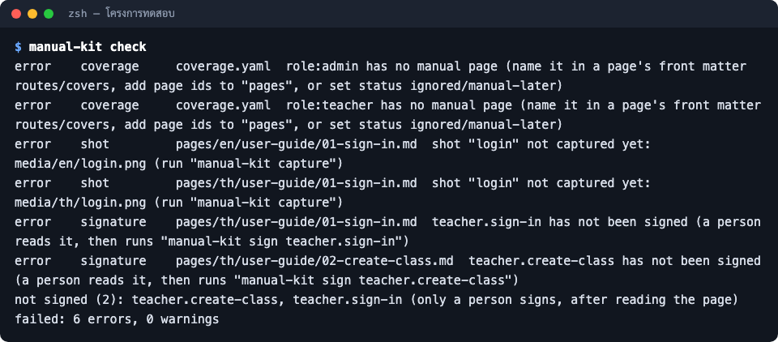

ปัญหาที่พบบ่อย
อาการ สาเหตุ และวิธีแก้ ตั้งแต่ติดตั้ง ทำคู่มือ ตรวจ ออกไฟล์ จนถึงเผยแพร่
อัปเดตล่าสุด 2026-10-07
- สำหรับ
- ทีมที่ทำคู่มือ
ในหน้านี้
เริ่มจาก ! manual-kit doctor ใน Claude Code เสมอ คำสั่งนี้บอกที่อยู่ของ plugin รุ่น Node และโปรแกรมเสริมที่มีหรือขาด
ครอบคลุมสาเหตุส่วนใหญ่ของปัญหาตอนติดตั้ง ข้อความในตารางเป็นข้อความที่ manual-kit แสดงจริง (ภาษาอังกฤษ)
ติดตั้งและเริ่มใช้
| อาการ | สาเหตุ | วิธีแก้ |
|---|---|---|
marketplace add ไม่ผ่าน |
ที่อยู่ repo ผิด หรือเครื่องต่อ repo ไม่ได้ | ตรวจที่อยู่ repo แล้วลองเปิดด้วย git ls-remote <ที่อยู่ repo> |
/manual ไม่ขึ้น |
plugin ยังไม่โหลด | ใช้ /manual-kit:manual หรือ claude plugin list ดูว่าติดตั้งแล้ว แล้วเปิด Claude Code ใหม่ |
manual-kit: Node.js 22.17 or newer is needed |
Node เก่า | brew upgrade node |
package "playwright" is not installed ... |
runtime ยังไม่ติดตั้ง (เช่น hook ตอนเปิดยังไม่จบ) | ! manual-kit setup แล้วลองใหม่ |
| ใช้ครั้งแรกช้า | กำลังติดตั้ง Chromium | รอ 2–3 นาที ครั้งเดียว |
ตรวจ (check)
ตัวอย่างผลจริงของ check บนโครงการทดสอบที่ยังไม่ได้ถ่ายภาพ ยังไม่ได้รับรอง และมีบทบาทที่ยังไม่มีหน้า:

| ข้อความ | ความหมาย | ทำอย่างไร |
|---|---|---|
... has no manual page |
มีหน้าจอ บทบาท หรือคำสั่งที่ยังไม่มีหน้าพูดถึง | ให้ Claude เพิ่มหน้า หรือตั้ง manual-later / ignored ใน coverage.yaml |
shot "..." not captured yet |
ยังไม่ได้ถ่ายภาพ | ให้ Claude รัน capture |
... has not been signed |
ยังไม่มีคนรับรอง | อ่าน แล้ว ! manual-kit sign ... |
... changed since it was signed |
หน้าหรือไฟล์ต้นทางเปลี่ยน | อ่านใหม่ แล้วรับรองใหม่ |
คำเตือน structure |
หน้าแบบ how-to ขาดหัวข้อมาตรฐาน | เพิ่มหัวข้อ ก่อนเริ่ม / ขั้นตอน / ผลลัพธ์ที่ได้ / ปัญหาที่พบบ่อย / หน้าที่เกี่ยวข้อง |
คำเตือน spec |
โค้ดมีสิ่งที่สเปกไม่ได้พูดถึง | /manual update |
ถ่ายภาพและวิดีโอ
| ข้อความ | สาเหตุ | วิธีแก้ |
|---|---|---|
... is not in capture.allowlist |
ที่อยู่ระบบไม่ใช่เครื่องตัวเองหรือที่อนุญาต | ใช้ระบบในเครื่อง ห้ามชี้ไป production |
stylesheet blocked (...); add the host to capture.assetHosts |
หน้าเว็บโหลด CSS หรือฟอนต์จาก CDN ซึ่งถูกบล็อก | เพิ่ม host ใน capture.assetHosts (โหลดได้แต่ไม่เปิดหน้าไปที่นั่น) |
environment variable ... is not set |
ขาดรหัสผ่านทดสอบในตัวแปรสภาพแวดล้อม | ตั้งตัวแปรที่ shots.yaml อ้าง ({env:NAME}) |
mask "..." matched nothing |
ส่วนที่ควรปิดบังไม่อยู่ในหน้า | ตรวจภาพ ข้อมูลส่วนตัวอาจหลุด แก้ selector |
ffmpeg not found |
ไม่มี ffmpeg | brew install ffmpeg หรือใช้ media steps |
ออกไฟล์และเผยแพร่
| อาการ | สาเหตุ | วิธีแก้ |
|---|---|---|
| ไฟล์ Word สารบัญไม่มีเลขหน้า | ไม่มี LibreOffice | เปิดใน Word แล้วอัปเดตสารบัญ หรือติดตั้ง LibreOffice แล้วทำใหม่ |
| ไม่ได้ไฟล์ Word | ไม่มี pandoc | brew install pandoc |
nothing to build: config outputs has pdf, docx and web all off |
ปิดผลลัพธ์ทุกแบบ | เปิดใน outputs |
set the Outline API key ... |
ไม่มี OUTLINE_API_KEY |
ดู เผยแพร่ขึ้น Outline wiki |
อัปเดต plugin
claude plugin update manual-kit@manual-kit
หรือเปิดอัปเดตอัตโนมัติ: ใน Claude Code พิมพ์ /plugin → Marketplaces → manual-kit → Enable auto-update